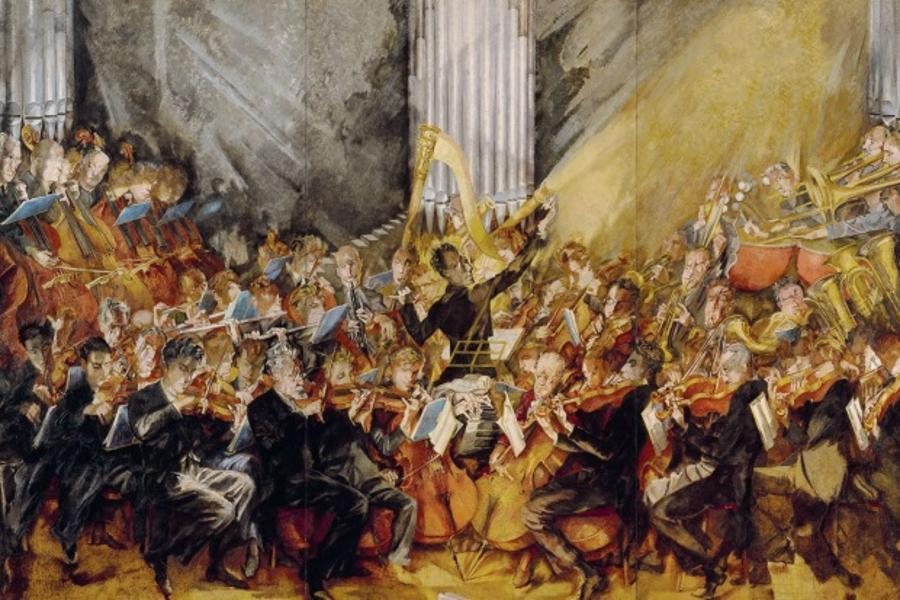

究極一百－交響曲Symphony
文/陳安駿
交響曲是許多愛樂者走進古典音樂世界的第一塊敲門磚，也是資深樂友始終關注的作品類別，它有多種管弦、打擊樂器營造的龐大氣勢、各樂章轉折分明的堅固結構、可抒情可言志，一代又一代作曲家們在這個曲種裡累積的，不只朗朗上口的動人旋律，還有他們對世界、對人生價值觀的種種體現，堪稱音樂發展的高峰——不過這當然是以古典或者浪漫時期以後，乃至近代的創作而言。在交響曲這個辭彙初生的文藝復興時期，它只是汎指「許多聲部（phony）一起出現（sym）」的多聲部聲樂與器樂曲；巴洛克早期則轉為歌劇及清唱劇中序曲或間奏曲的名稱，或是管弦樂演奏的組曲，彼時序曲有法式與義式兩種主流，後者由史卡拉第（Allessandro Scalatti）首創，其快—慢—快的三樂段架構，在18世紀初期序曲脫離劇樂、單獨演出之後，即成為交響曲樂章格式最初的樣貌。
此後歷經曼海姆樂派將其擴大發展為四樂章形制，伴隨奏鳴曲式的逐漸成熟，一面設計出包含呈示、發展、再現三部的快板奏鳴曲式，一面用奏鳴曲的結構將四個樂章統一起來，這一切在海頓手上集於大成，為後世交響曲體裁奠定圭臬，莫札特很快遵循仿效，與海頓彼此激盪，不只形塑了我們今日所知「交響曲」的樣貌，也為後世作曲家樹立起這個領域的第一道典範。
緊接著前兩者而來的貝多芬，用交響曲石破天驚地敲打，將樂壇一舉送入浪漫時期；白遼士的管弦樂法豐富了交響的語彙；在布拉姆斯終於拿出堪與貝多芬九大鼎立的作品時，歐洲各地的民族樂派的「德弗札克們」，與即將登上舞臺中央、來自俄國的「柴科夫斯基們」正嫻熟地以家鄉的一針一線，編織錦繡無雙；他們身後那波19、20世紀之交的翻天覆地，是馬勒與荀貝格的擅場，而身在東線的蕭斯塔科維契，則自有一番蘇維埃的新說。
（哈農庫特指揮維也納古樂合奏團）
海頓：第七十三號交響曲《狩獵》
• Haydn: Symphony No.73 "La Chasse"
• 發表年分：1781
海頓承繼曼海姆樂派的餘緒，並擷取同時期的維也納、巴黎音樂特色，綜合底定了交響曲的一般格式，因此享有交響樂之父的美譽，他筆下的交響曲多達107首，早期也有3個樂章或5個樂章、尚在摸索的作品。1781年，海頓寫出一組6首的《俄羅斯》弦樂四重奏（Op.33/ Hob.III: 37-42）時，曾表示：「我以嶄新而特別的方法寫下這些樂曲。」這裡指的正是快板奏鳴曲式。他也將這種作曲方式引入到同年創作的第七十三號交響曲（Hob.Ⅰ: 73）中，確立了這個曲種「第一樂章依快板奏鳴曲式鋪陳、第二樂章慢板、第三樂章小步舞曲、第四樂章使用輪旋曲式或奏鳴曲式」的標準體例。
本曲的第一樂章，自導奏開始，先有一個慢板的序奏部，從主調安定地開始，最末轉入平行小調、終止於同主小調的屬音，這是海頓之後在序奏裡慣用的調性安排。其後的主部為快板奏鳴曲式，呈示部帶出第一、第二主題；發展部以第一主題為主材料；再現部重現兩個主題，但將第二主題的動機重疊運用、充滿刺激的和聲。第二樂章取自他先前譜寫的歌曲《愛的報酬》，因此形成了交響曲第二樂章「歌謠體」的傳統。第三樂章依曼海姆樂派的習慣，是一闕小步舞曲。最後的第四樂章回到奏鳴曲式，使用兩個狩獵主題，尾奏短小，收束於消失般的靜謐。
（阿巴多指揮莫札特管弦樂團）
莫札特：第四十號交響曲
• Mozart: Symphony No.40
• 發表年分：1788
1782年，莫札特很快在自己的第三十五號交響曲《哈夫納》上追隨海頓，也開始使用奏鳴曲快板曲式，後來海頓也師法莫札特將單簧管納入交響樂的標準編制的創舉，兩人彼此學習砥礪，十幾年間就讓這門藝術攀至古典時期的高點。
G小調第四十號交響曲（K. 550）是莫札特最傑出的三大晚期交響曲之一，除了是他「唯二」的小調交響曲，可能也是他同類作品中最熱門的一首。該曲的第一、第二、第四樂章都用快板奏鳴曲式寫作，第三樂章保持小步舞曲的體裁，而此曲讓人朗朗上口、縈懷難忘的關鍵，則在二度音程構成連續「嘆息」音型，跳躍後又按級下行的第一主題，及由此動機衍生、帶有半音階陰影的第二主題，莫札特不只在第一樂章使用這兩個主題，還將它們的動機與氣氛安排到後面的三個樂章中，讓整部作品充滿了由內向外、緊密推進的一體感與前行力，全曲的張力一路維持到終樂章，少見地收束在嚴厲激烈的尾奏上，相當深入人心。
（福特萬格勒指揮貝多芬三首交響曲）
貝多芬：第三號交響曲《英雄》
• Beethoven: Symphony No.3 "Eroica"
• 發表年分：1802
在貝多芬九大交響曲中，人們最熟悉的當屬「敲門很急」的第五號《命運》，還有加入聲樂的第九號《合唱》，不過他真正走出海頓與莫札特的影子、樹立自己風格，並開啟浪漫時代起點的里程碑，其實還屬1804年誕生的第三號《英雄》。
此曲與拿破崙之間難以釐清的傳奇故事，此處暫且不表，光就音樂本身來說，它不只延續第二號以詼諧曲取代小步舞曲的做法，讓作曲家更能自由地將性格與意志表現出來，還有許多非常新穎的創舉：第一樂章規模龐大，使用了超過七種旋律素材，加以緊密聯繫，連帶讓發展部擴大到遠超呈示部與再現部的規模，並率先體系化使用漸強與漸弱的對比原理，這在其後的第五號交響曲中將得到進一步的實踐。在配器方面，貝多芬將銅管引入樂團編制，大膽使用法國號、低音管、定音鼓，又用短笛與低音提琴擴展音域，更是大幅度地強化了交響曲的表現力。綜合來說，本曲在音樂史上帶來的突破，就如它的導奏與終樂章的序奏帶給當時聽眾的震撼一樣，將西方古典音樂的進程推入了嶄新的境界，實為交響曲中不可錯過的必賞之作。
（克路易坦指揮愛樂管弦樂團）
白遼士：幻想交響曲
• Berlioz: Symphonie Fantastique
• 發表年分：1830
白遼士五個樂章的幻想交響曲（Symphonie Fantastique）在此出現，擺明不是衝著交響曲的「體裁」而來，但它對後世影響之深遠，卻並不亞於前三首德奧大師之作。
本曲1832年出版的樂譜上，有作曲家親撰的一段總體說明：「某一具有病態感受性與豐富想像力的青年音樂家，為了不堪激情的折磨而吞服鴉片自盡，但因藥量不足未能致死，他陷入了昏迷狀態中，夢見了奇形怪狀的各種幻象……他所戀慕的女性，化成一個旋律型態，猶如固定意念不斷的浮現出來。」白遼士以單戀的相思入樂，把自己心中的伊人化為一段固定的旋律，他稱其為「固定樂思」（idée fixe），在這個交響音樂故事中不斷出現，示意她在每個段落（樂章）裡登場，該樂思的各種變形，則表達其苦樂順逆的不同遭遇，這個手法決定性地刺激了標題音樂與交響詩的發展，華格納的「引導動機」（leitmotiv）即由此而來。
他的另一個創舉在於擴大管弦樂的規模，樂器的數量增加，種類也因豎琴、英國管、低音號、打擊樂器的加入而更形多樣，連小提琴都要求使用弓背的新拉法，使音響的色彩更加豐富紛呈，他把這些創見都寫入了自己的標竿著作《近代器樂法與管弦樂法》，並在幻想交響曲等作品中完全體現出來。
（卡拉揚指揮柏林愛樂）
布拉姆斯：第一號交響曲
• Brahms: Symphony No.1
• 發表年分：1876
布拉姆斯常被稱為「古典主義最後一人」，當時也有評論家把他的作品喻為「古典的罈中裝入浪漫的酒」。就布氏一般遵守既有曲式，又偏重於思考性而非表現性的筆法而言，這樣的觀點大體能夠成立，但細究起來，可能就會發現未必是這麼一回事，這在他二十年磨一劍，又被譽／謗為「貝多芬第十」的第一號交響曲裡，就能得到完全不同的證明。
布拉姆斯的四首交響曲，都未脫離「四樂章」的規範，但他建構這四個樂章的方式，卻與古典時期的作品有不小的出入：首先，在各樂章調性的安排方面，以三度關係取代傳統的五度關係，第三樂章也不回到主調上；其次，除了必要地依循曲式，他常常用自己的筆法，或是變奏曲的形式來書寫各樂章的內容，可謂相當自由。
本曲第一樂章的序奏，是定音鼓堅定的強擊，伴隨弦樂半音上行、管樂下行的旋律，以對位法展開，但它並非單純地導入全曲，而是包含了本樂章後續的所有主要動機，接著按奏鳴曲快板曲式的定例，依序呈示、發展、再現，第四樂章也是如此構成。第二樂章使用三段曲式，第三樂章亦然，不過樂章既非小步舞曲，也不是貝多芬式的詼諧曲，而是一段純樸浪漫的三段曲，中段帶有布拉姆斯時常使用的「命運動機」與相呼應的「死亡動機」，很具個人特色。
（庫貝利克指揮柏林愛樂）
德弗札克：第九號交響曲《來自新世界》
• Dvorak: Symphony No.9 "From the New World"
• 發表年分：1893
論及19世紀下半葉大行其道的民族樂派，選介德弗札克的第九號交響曲，算是一魚兩吃：既捷克了一下，又美國了一把。
1892年，德弗札克應聘赴美國國家音樂學院擔任院長，受到當地黑人及印地安人歌謠的啟發，於當年年底至1893年初，即孕育出一部交響曲初稿，那年夏天前往波西米亞移民聚集區、補充「懷鄉」的能量之後，終將草稿發展成為這首《來自新世界》。